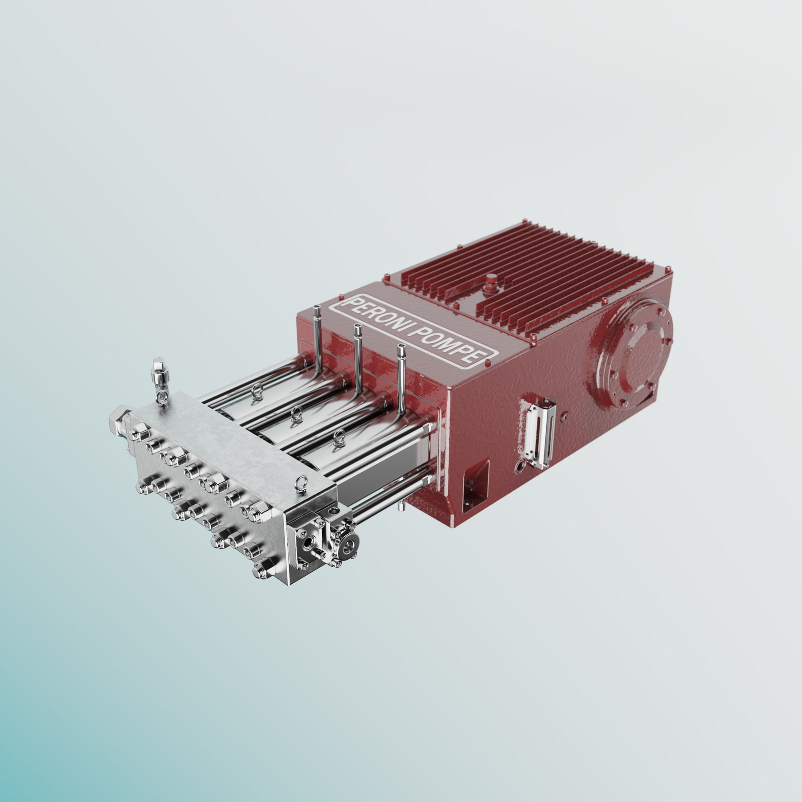

From Engineering Complexity to Customer Clarity
Industrial product communication developed for a manufacturing environment—from optimized CAD and photorealistic rendering to animation, catalogs, and customer presentations.
- Official Website
- Engineering Review
- International Exhibitions